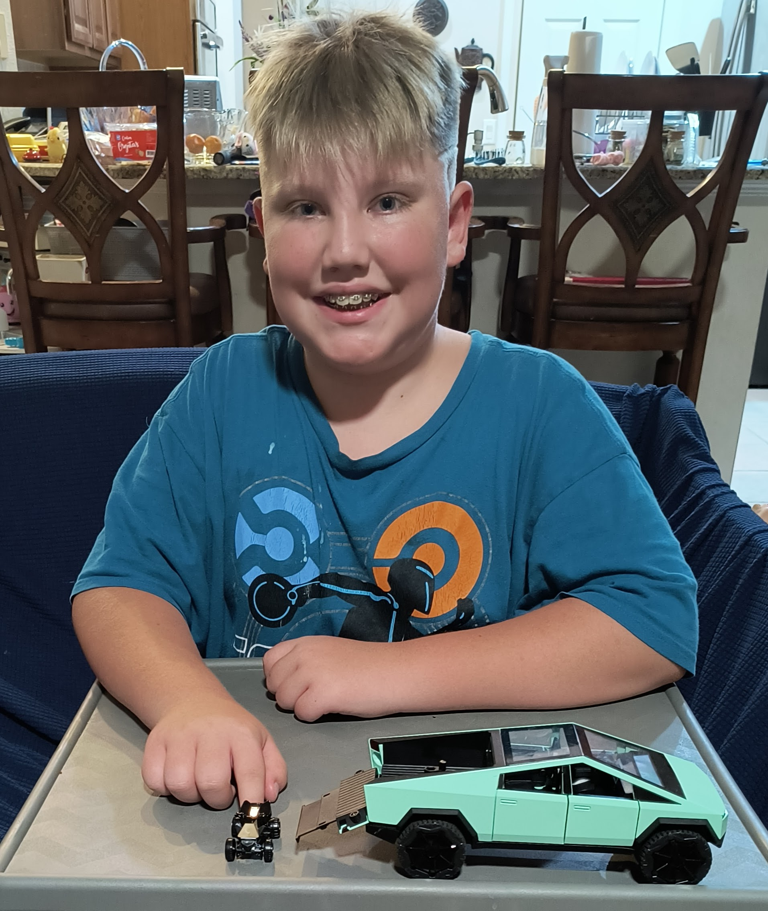
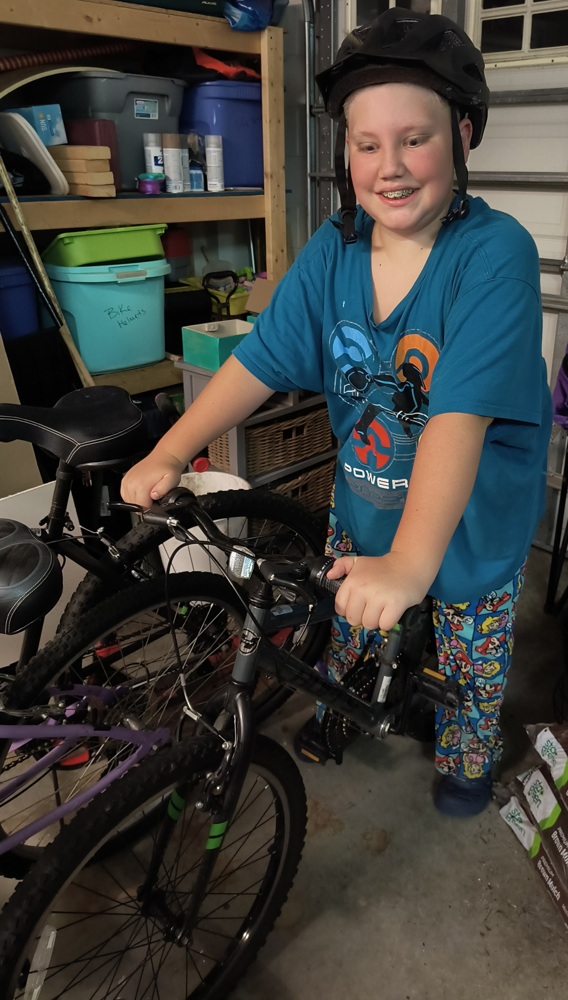
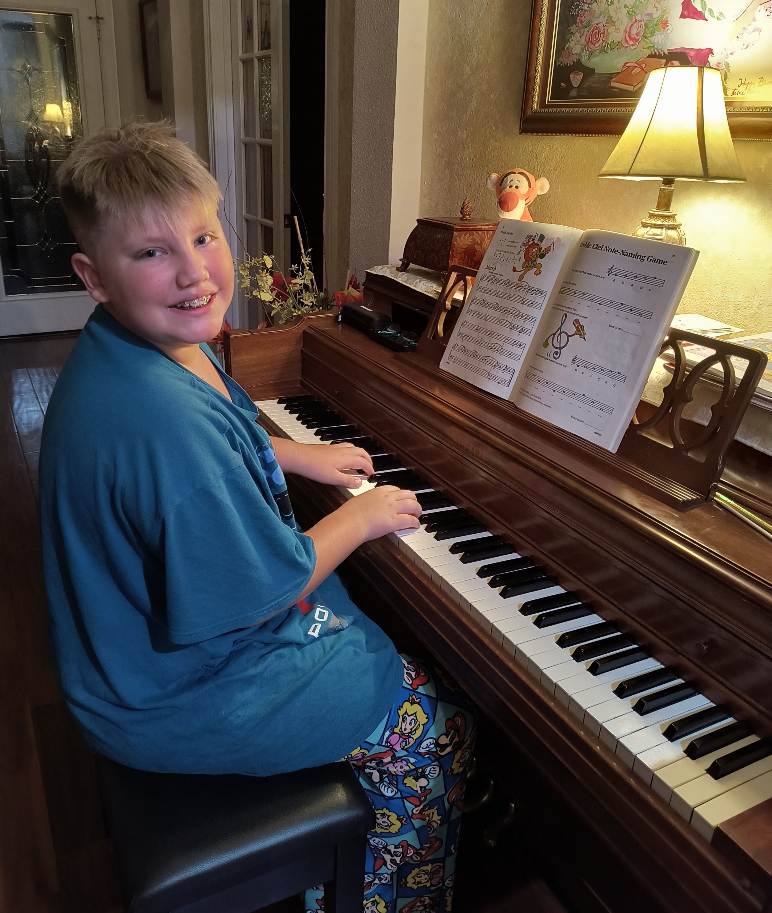

Sebastian
The Explorer of Ideas
About
Hobbies
CrunchLabs
Sebastian's Goals & Achievements

Sebastian Dreaming of the CyberTruck CyberBeast

Sebastian Exploring the world on two wheels

Sebastian Learning music, one key at a time